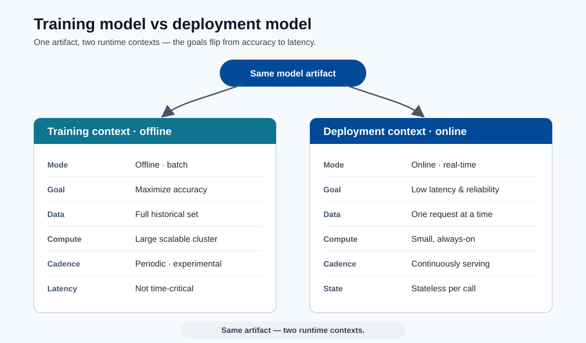
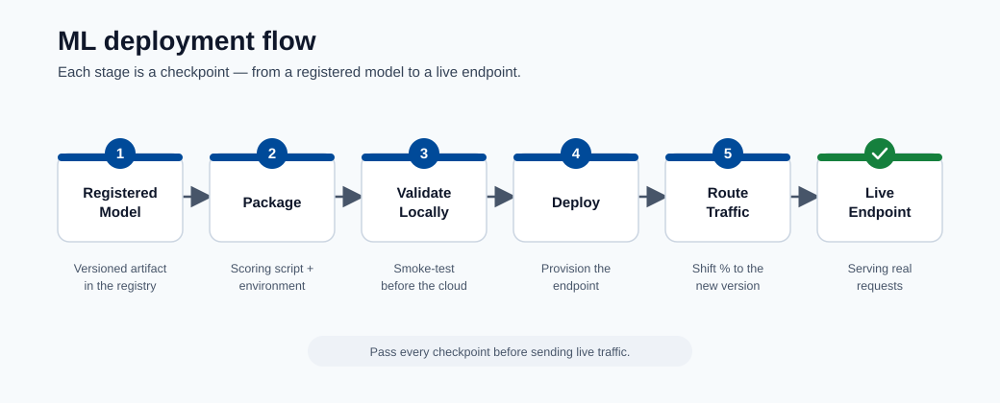
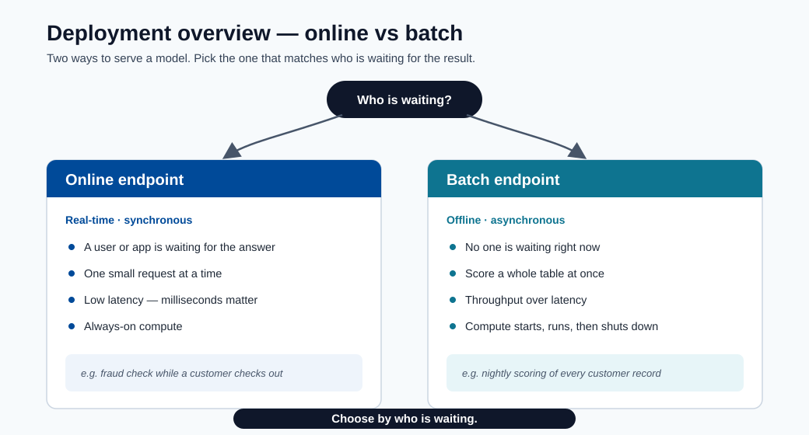
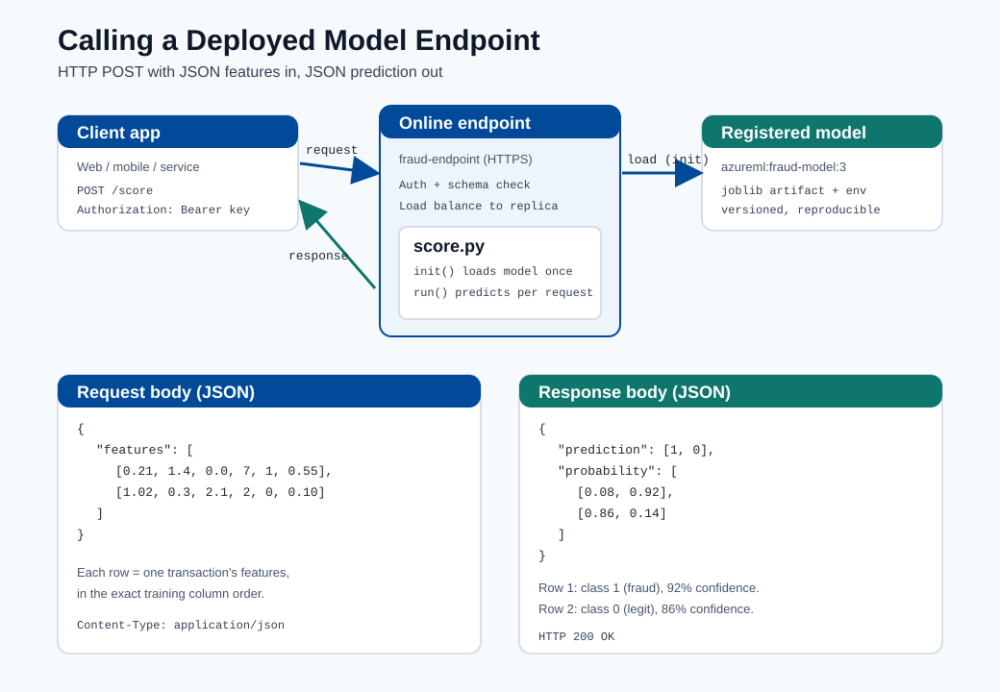
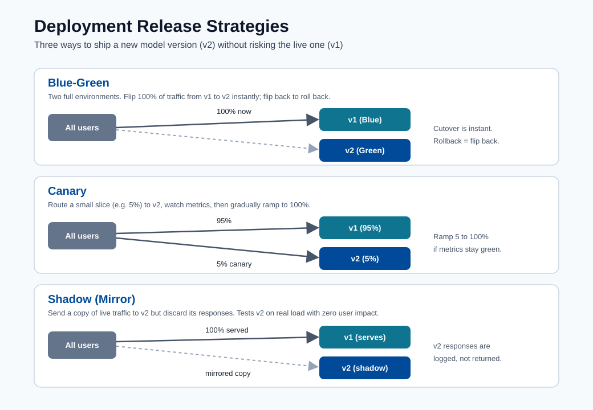

Deployment¶
This module covers the path from model artifact to production endpoint, including deployment patterns, release strategies, and operational safeguards.

Note - What this shows: The contrast between the training model (offline, batch, optimized for accuracy) and the deployment model (online, stateless, optimized for latency). The same artifact serves two very different runtime contexts.

Note - What this shows: The deployment flow from registered model to live endpoint. Each stage : package, validate locally, deploy, route traffic : is a checkpoint where a release can be caught before customers are affected.

Note - What this shows: A high-level overview of deployment options (online vs batch endpoints). Choose by who is waiting: a user/app in real time → online endpoint; a whole table scored overnight → batch endpoint.
Deployment steps¶
- Register model
- Build scoring script with init and run
- Create inference environment
- Validate local deployment
- Deploy to ACI or AKS
Scoring script structure (Azure ML SDK v2)¶
import json
import numpy as np
import joblib
from azureml.core.model import Model
def init():
global model
model_path = Model.get_model_path("fraud-model")
model = joblib.load(model_path)
def run(raw_data: str) -> str:
data = json.loads(raw_data)
features = np.array(data["features"])
prediction = model.predict(features)
probability = model.predict_proba(features)
return json.dumps({
"prediction": prediction.tolist(),
"probability": probability.tolist()
})
Key rules for a production-grade scoring script:
init()runs once at startup; load model here, not inrun().run()is called for every request; keep it stateless.- Validate input schema inside
run()before calling the model. - Never log raw PII; log hashed IDs and prediction metadata only.
Endpoint types¶
| Type | Best for | Trade-off |
|---|---|---|
| Online endpoint | Real-time predictions | Requires low-latency ops |
| Batch endpoint | Large offline scoring jobs | Not real-time |
End-to-end example: calling a deployed model¶
This walks through exactly what a deployed model looks like in practice : the API, what you send,
how to call it, and what comes back : using the fraud-endpoint from the scoring script above.

Note - How to read this diagram: The client sends an HTTPS
POSTwith a JSON body of feature rows. The endpoint authenticates the call, validates the schema, and routes it to a warm replica. Inside,init()has already loaded the registered model once, sorun()only does the fast prediction and returns a JSON body with the predicted class and per-class probability.
1. What the API looks like¶
After deployment, Azure ML gives you two things:
| Item | Example | Where to get it |
|---|---|---|
| Scoring URI | https://fraud-endpoint.eastus.inference.ml.azure.com/score |
az ml online-endpoint show -n fraud-endpoint --query scoring_uri |
| Auth key/token | Bearer <primary-key> |
az ml online-endpoint get-credentials -n fraud-endpoint |
The contract is a simple HTTP POST:
| Field | Value |
|---|---|
| Method | POST |
| Path | /score |
| Headers | Content-Type: application/json, Authorization: Bearer <key> |
| Body | JSON object: {"features": [[...], [...]]} |
2. The request you send¶
{
"features": [
[0.21, 1.4, 0.0, 7, 1, 0.55],
[1.02, 0.3, 2.1, 2, 0, 0.10]
]
}
Each inner array is one record, with values in the exact same column order used during training. Here we send two transactions in a single call (batching reduces per-request overhead).
3. How to call it¶
curl -X POST "https://fraud-endpoint.eastus.inference.ml.azure.com/score" \
-H "Content-Type: application/json" \
-H "Authorization: Bearer $ENDPOINT_KEY" \
-d '{"features": [[0.21, 1.4, 0.0, 7, 1, 0.55], [1.02, 0.3, 2.1, 2, 0, 0.10]]}'
import os
import requests
url = "https://fraud-endpoint.eastus.inference.ml.azure.com/score"
headers = {
"Content-Type": "application/json",
"Authorization": f"Bearer {os.environ['ENDPOINT_KEY']}",
}
payload = {"features": [[0.21, 1.4, 0.0, 7, 1, 0.55],
[1.02, 0.3, 2.1, 2, 0, 0.10]]}
response = requests.post(url, json=payload, headers=headers, timeout=10)
response.raise_for_status()
result = response.json()
for i, (label, proba) in enumerate(zip(result["prediction"], result["probability"])):
confidence = max(proba)
print(f"row {i}: class={label} confidence={confidence:.0%}")
const res = await fetch("https://fraud-endpoint.eastus.inference.ml.azure.com/score", {
method: "POST",
headers: {
"Content-Type": "application/json",
Authorization: `Bearer ${process.env.ENDPOINT_KEY}`,
},
body: JSON.stringify({
features: [
[0.21, 1.4, 0.0, 7, 1, 0.55],
[1.02, 0.3, 2.1, 2, 0, 0.10],
],
}),
});
const result = await res.json();
console.log(result.prediction, result.probability);
4. The response you get back¶
{
"prediction": [1, 0],
"probability": [
[0.08, 0.92],
[0.86, 0.14]
]
}
5. How to read the result¶
| Row | prediction |
probability [P(class0), P(class1)] |
Meaning |
|---|---|---|---|
| 0 | 1 |
[0.08, 0.92] |
Flagged as fraud with 92% confidence |
| 1 | 0 |
[0.86, 0.14] |
Predicted legitimate with 86% confidence |
predictionis the model's chosen class per row (here1 = fraud,0 = legitimate).probabilitygives the confidence per class; the values in each row sum to1.0.- Your application decides the action threshold: e.g. auto-block at
P(fraud) >= 0.90, send to manual review between0.50and0.90, and allow below0.50. The model returns scores; the business rule turns them into decisions.
Tip - Handle errors in the client: Expect non-
200responses too :401/403(bad or expired key),400(schema/shape mismatch),429(throttling, back off and retry), and503(replica cold-start or overload). Always set a timeout and a small retry with backoff, as noted in the reliability checklist below.
Release strategies¶

Tip - How to choose: All three protect the live model (v1) while validating a new one (v2). Blue-green flips 100% of traffic at once and rolls back by flipping back : simplest, but the blast radius is the whole user base for the moment of the switch. Canary sends a small slice (e.g. 5%) to v2 and ramps up only while metrics stay healthy : the safest progressive rollout. Shadow mirrors real traffic to v2 but discards its responses, so you can test on production load with zero customer impact before any real cutover.
- Blue/green: switch traffic to a fully prepared new version.
- Canary: send a small percentage of traffic to new version first.
- Shadow: mirror traffic for observation without serving responses.
When to use each strategy¶
| Strategy | Use when | Risk level |
|---|---|---|
| Blue/green | Rollback must be instant; new version is well-tested | Low (with rollback ready) |
| Canary | Need to validate new model on real traffic at low exposure | Medium |
| Shadow | Need to compare new model with zero customer exposure | Very low (no production impact) |
| Rolling update | Stateless microservice with no model-specific state | Low |
Configuring canary traffic split (Azure ML managed online endpoint)¶
# deployment.yml
$schema: https://azuremlschemas.azureedge.net/latest/managedOnlineDeployment.schema.json
name: blue
endpoint_name: fraud-endpoint
model: azureml:fraud-model:3
code_configuration:
code: ./src
scoring_script: score.py
environment: azureml:fraud-infer:2
instance_type: Standard_DS2_v2
instance_count: 1
After deploying both blue and green:
# Route 10% traffic to canary (green)
az ml online-endpoint update \
--name fraud-endpoint \
--traffic "blue=90 green=10"
Reliability checklist¶
- Health probes and liveness checks configured.
- Request/response schema validation in scoring script.
- Timeouts and retries defined at client and service layer.
- Rollback criteria defined before release.
Security checklist¶
- Enforce auth keys/tokens and rotate credentials.
- Restrict network exposure (private endpoints when possible).
- Log access and prediction metadata for audits.
CI/CD deployment pipeline (recommended)¶
flowchart LR
A[Train + Register Model] --> B[Package Scoring Image]
B --> C[Security/Dependency Scan]
C --> D[Deploy to Staging Endpoint]
D --> E[Functional + Load Tests]
E --> F[Approval Gate]
F --> G[Canary/Blue-Green to Production]
G --> H[Post-Deploy Monitoring]Capacity planning basics¶
Required replica estimate:
where:
- \(QPS\): expected requests per second
- \(t_{p95}\): p95 service time (seconds)
- \(u\): target utilization per replica (e.g., 0.6 to 0.8)
Runtime SLI/SLO table¶
| SLI | Typical SLO |
|---|---|
| Availability | >= 99.9% |
| p95 latency | <= 250 ms |
| Error rate | <= 1% |
| Freshness of model version | <= 30 days (policy dependent) |
flowchart LR
A[Register] --> B[Score Script]
B --> C[Inference Config]
C --> D[Local Test]
D --> E[ACI or AKS]Quick self-check¶
| # | Question | Answer |
|---|---|---|
| 1 | When is a batch endpoint better than an online endpoint? | When no user is waiting on the response: high-throughput, offline scoring of large datasets (e.g., scoring an entire table overnight). |
| 2 | Why run a local validation step before cloud deployment? | It catches cheap, common failures (bad dependencies, model-load errors, schema mismatches) in seconds, before paying for cloud provisioning or risking a failed production rollout. |
| 3 | What is the advantage of a canary release? | It routes a small slice of real traffic to the new version and watches metrics before ramping up, limiting blast radius and catching problems offline tests miss. |
Deep dive: every concept, explained¶
This section explains the deployment concepts so each operational choice has a clear rationale.
Why init() and run() are split¶
The scoring script has two functions by design:
init()runs once when the container starts. Loading the model (often hundreds of MB) is expensive, so doing it here : into a global : means it happens a single time, not per request.run()executes per request and must be stateless: no shared mutable state between calls, so concurrent requests cannot corrupt each other. Statelessness is also what makes the service horizontally scalable : any replica can handle any request.
This separation directly determines latency: model load is a one-time cold-start cost;
run() is the warm per-request path you optimize.
Online vs batch endpoints : matching shape to workload¶
| Dimension | Online endpoint | Batch endpoint |
|---|---|---|
| Trigger | Synchronous HTTP request | Scheduled / on-demand job |
| Latency goal | Milliseconds per request | Throughput over millions of rows |
| Scaling | Keep replicas warm | Spin up, process, scale to zero |
| Use when | A user/app waits for the answer | Scoring a whole table overnight |
The decision is about who is waiting: a checkout fraud check needs an online endpoint; scoring yesterday's entire transaction log is cheaper and simpler as a batch job.
Release strategies and the risk they manage¶
All three strategies exist to limit the blast radius of a bad model:
- Blue/green keeps the old version (blue) fully running while the new (green) is prepared, then flips 100% of traffic at once. Rollback is instant : flip back. Best when you trust the new version and need zero-downtime cutover.
- Canary routes a small slice (e.g. 10%) to the new version and watches metrics before ramping up. It validates on real traffic at controlled exposure : the safest way to catch problems that offline tests miss.
- Shadow sends a copy of traffic to the new model but discards its responses, so it is evaluated against production inputs with zero customer impact. Ideal for high-stakes models where even 10% exposure is too risky.
The Azure traffic-split (blue=90 green=10) is the concrete mechanism that implements canary on a
managed online endpoint.
Capacity planning: where the replica formula comes from¶
\(R \approx \lceil \tfrac{QPS\cdot t_{p95}}{u}\rceil\) is Little's Law applied to serving. \(QPS\cdot t_{p95}\) is the average number of requests in flight at any moment (arrival rate times service time); dividing by target utilization \(u\) (e.g. 0.7, leaving headroom for bursts and tail latency) gives the replica count, rounded up. Using \(t_{p95}\) rather than the mean sizes the fleet for realistic worst-case service time, so the SLO holds under load rather than only on average.
SLIs, SLOs, and why model freshness is one of them¶
An SLI is a measured signal (availability, p95 latency, error rate); an SLO attaches a target ("p95 ≤ 250 ms"). Including model-version freshness as an SLO is what distinguishes ML serving from ordinary web serving : a perfectly available endpoint serving a stale, drifted model is still failing its job. This connects deployment health back to the drift monitoring from the previous module.
Why local validation precedes cloud deployment¶
Validating the scoring container locally catches the cheap, common failures : bad dependencies, model-load errors, schema mismatches : in seconds, before paying for cloud provisioning and before risking a failed production rollout. It is the deployment analog of running unit tests before merging: fail fast, fail cheap.
Security concepts in serving¶
- Auth keys/tokens ensure only authorized callers reach the endpoint; rotating them limits damage from a leaked credential.
- Private endpoints keep traffic off the public internet for regulated data.
- Logging prediction metadata but never raw PII (log hashed IDs, not personal fields) gives auditability without creating a data-protection liability : the same principle the scoring-script rules enforce.
Quick self-check (deep dive)¶
| # | Question | Answer |
|---|---|---|
| 1 | Why is the model loaded in init() and not in run()? |
init() runs once at container startup, so the expensive model load happens a single time instead of on every request. |
| 2 | What property must run() have to allow horizontal scaling, and why? |
It must be stateless (no shared mutable state), so any replica can handle any request and concurrent requests cannot corrupt each other. |
| 3 | Compare canary and shadow releases: which exposes customers to the new model, and which does not? | Canary exposes customers (a small slice of real traffic hits the new model); shadow does not, because its responses are discarded for zero customer impact. |
| 4 | In the replica formula \(R \approx \lceil QPS \cdot t_{p95} / u \rceil\), why use p95 service time instead of the mean? | p95 sizes the fleet for realistic worst-case service time, so the SLO holds under load rather than only on average. |
| 5 | Why is model-version freshness treated as an SLO alongside latency and availability? | A perfectly available endpoint serving a stale, drifted model is still failing its job, so freshness is a quality target just like latency and availability. |
Online vs batch endpoints: deep dive¶
Azure ML offers two endpoint families. Choosing the wrong one at the start of a project is an expensive mistake to reverse, so this section provides the full decision criteria and configuration detail.
Managed online endpoint vs Kubernetes online endpoint¶
| Dimension | Managed online endpoint | Kubernetes online endpoint |
|---|---|---|
| Infrastructure management | Azure-managed (fully serverless) | Customer-managed AKS cluster |
| Traffic splitting | Native (percentage-based per deployment) | Via Kubernetes Service/Ingress rules |
| Custom networking | Private endpoint supported | Full VNet integration and custom CNI |
| GPU support | Available (A100, V100 instance types) | Any GPU node pool in AKS |
| Observability | Azure Monitor + built-in metrics | Bring-your-own Prometheus/Grafana |
| Cost model | Pay per instance-hour + reserved | AKS node pool cost (always-on) |
| Best for | Teams that want zero cluster ops | Platform teams with existing AKS governance |
Batch endpoint triggers¶
Batch endpoints process large data volumes asynchronously. They support two trigger modes:
- On-demand invocation via
az ml batch-endpoint invokeor SDK call. - Scheduled invocation via an Azure ML schedule job linked to the batch endpoint.
# On-demand batch invocation
az ml batch-endpoint invoke \
--name fraud-batch-endpoint \
--input azureml:transactions-nov:1 \
--mini-batch-size 100 \
--instance-count 5
Managed identity and traffic rules¶
Managed online endpoints support system-assigned managed identity to authenticate against Azure services (Key Vault, Storage, ACR) without credentials in code.
# endpoint.yml
$schema: https://azuremlschemas.azureedge.net/latest/managedOnlineEndpoint.schema.json
name: fraud-endpoint
auth_mode: key
identity:
type: system_assigned
Traffic rules allow multiple simultaneous deployments with controlled splits:
# Split traffic 90/10 between blue and green deployments
az ml online-endpoint update \
--name fraud-endpoint \
--traffic "blue=90 green=10"
# Mirror traffic to shadow deployment (no response served from shadow)
az ml online-endpoint update \
--name fraud-endpoint \
--traffic "blue=100" \
--mirror-traffic "shadow=50"
Deployment configuration YAML in detail¶
# deployment_blue.yml
$schema: https://azuremlschemas.azureedge.net/latest/managedOnlineDeployment.schema.json
name: blue
endpoint_name: fraud-endpoint
model: azureml:fraud-model:5
code_configuration:
code: ./src
scoring_script: score.py
environment: azureml:fraud-infer:3
instance_type: Standard_DS3_v2
instance_count: 2
request_settings:
request_timeout_ms: 3000
max_concurrent_requests_per_instance: 10
max_queue_wait_ms: 500
liveness_probe:
initial_delay: 30
period: 10
timeout: 2
success_threshold: 1
failure_threshold: 30
readiness_probe:
initial_delay: 30
period: 10
timeout: 2
success_threshold: 1
failure_threshold: 10
data_collector:
collections:
request:
enabled: true
response:
enabled: true
Request path sequence diagram¶
sequenceDiagram
participant C as Client
participant AG as Azure API Gateway
participant LB as Load Balancer
participant R1 as Replica 1 (blue)
participant R2 as Replica 2 (blue)
participant M as Model Registry
Note over R1,R2: init() called once at startup
R1->>M: Pull model artifact
R2->>M: Pull model artifact
C->>AG: POST /score (Bearer token)
AG->>AG: Authenticate key/token
AG->>LB: Forward request
LB->>R1: Route to least-loaded replica
R1->>R1: Validate input schema
R1->>R1: run() — model.predict()
R1->>LB: 200 OK + JSON response
LB->>AG: Forward response
AG->>C: 200 OK + JSON response
Note over AG: Logs request metadata (no PII)Autoscaling and load management¶
Autoscaling prevents both over-provisioning (wasting money) and under-provisioning (causing timeouts). Azure ML managed online endpoints use Horizontal Pod Autoscaling (HPA) backed by Azure Monitor metrics.
Scale-out trigger logic¶
The autoscaler monitors two primary signals:
- CPU utilization — scale out when average CPU across replicas exceeds a target percentage.
- Request queue depth — scale out when pending requests exceed a threshold, even before CPU is fully saturated. This is critical for models with variable inference latency.
The scale-out decision uses the formula:
Example: 3 replicas at 85% CPU with a 60% target → target = \(\lceil 3 \times 85/60 \rceil = 5\) replicas.
Autoscaling YAML for Azure ML managed online endpoint¶
# autoscale_policy.yml — applied via az ml online-deployment update
$schema: https://azuremlschemas.azureedge.net/latest/managedOnlineDeployment.schema.json
name: blue
endpoint_name: fraud-endpoint
scale_settings:
type: target_utilization
min_instances: 2
max_instances: 10
target_utilization_percentage: 70
polling_interval: 30
cooldown_period: 120
| Parameter | Recommended value | Rationale |
|---|---|---|
min_instances |
≥ 2 | Survive a single replica failure without downtime |
max_instances |
Cost ceiling / burst capacity | Cap spend; set based on quota |
target_utilization_percentage |
60–75% | Leave headroom for request bursts and tail latency |
cooldown_period |
120 s | Prevent oscillation (scale-in too fast after brief burst) |
Why autoscaling requires stateless scoring¶
The autoscaler can add or remove replicas at any time. If a replica holds state (open database connections per request, cached per-user context), routing a request to a new replica would lose that state. Statelessness — every replica handles every request independently using only the loaded model and the request payload — is the architectural prerequisite that makes horizontal scaling correct and safe.
Tip - Pre-warm replicas: Set
min_instancesto the number that handles your sustained non-peak traffic. This avoids cold-start latency spikes at the beginning of business hours when traffic ramps up faster than the autoscaler can provision.
Model serving performance optimization¶
Latency and throughput are engineering problems with concrete techniques. This section covers the five most impactful optimizations in order of implementation effort.
ONNX export for cross-framework portability¶
ONNX (Open Neural Network Exchange) is a vendor-neutral model format. Exporting to ONNX decouples the serving runtime from the training framework, enabling use of ONNX Runtime — a highly optimized inference engine — regardless of whether the model was trained in PyTorch, scikit-learn, or LightGBM.
# Export LightGBM to ONNX
from skl2onnx import convert_sklearn
from skl2onnx.common.data_types import FloatTensorType
import onnx
initial_type = [("float_input", FloatTensorType([None, X_train.shape[1]]))]
onnx_model = convert_sklearn(lgbm_pipeline, initial_types=initial_type)
with open("model.onnx", "wb") as f:
f.write(onnx_model.SerializeToString())
# Serve with ONNX Runtime in scoring script
import onnxruntime as rt
import numpy as np
def init():
global session
model_path = os.path.join(os.getenv("AZUREML_MODEL_DIR"), "model.onnx")
opts = rt.SessionOptions()
opts.intra_op_num_threads = 4
session = rt.InferenceSession(model_path, opts, providers=["CPUExecutionProvider"])
def run(raw_data: str) -> str:
data = json.loads(raw_data)
features = np.array(data["features"], dtype=np.float32)
input_name = session.get_inputs()[0].name
result = session.run(None, {input_name: features})
return json.dumps({"prediction": result[0].tolist()})
Typical latency improvement from switching to ONNX Runtime: 20–60% on CPU, depending on model complexity.
Model quantization: INT8¶
Quantization reduces model weight precision from FP32 to INT8, shrinking model size by approximately 4× and reducing inference latency by 2–3× on supported hardware, at the cost of a small accuracy drop (typically < 1% on well-calibrated models).
where \(s\) is the scale factor and \(z\) is the zero point, computed from the weight distribution.
# Dynamic quantization (no calibration data needed)
from onnxruntime.quantization import quantize_dynamic, QuantType
quantize_dynamic(
model_input="model.onnx",
model_output="model_int8.onnx",
weight_type=QuantType.QInt8
)
| Format | Model size | Latency | Accuracy impact |
|---|---|---|---|
| FP32 (original) | 100% | Baseline | None |
| FP16 | ~50% | ~10–20% faster | Negligible |
| INT8 | ~25% | ~50–70% faster | < 1% on most tabular |
Batching at inference time¶
Batching multiple requests together amortizes fixed per-call overhead (memory allocation, ONNX session setup, feature preprocessing) across many rows.
# Enable micro-batching in deployment
request_settings:
max_concurrent_requests_per_instance: 20
request_timeout_ms: 5000
For batch-tolerant applications, implement client-side batching: accumulate requests for up to 50 ms and send them as a single payload. The scoring script then vectorizes the call:
def run(raw_data: str) -> str:
data = json.loads(raw_data)
# Accepts a list of feature rows; vectorize in one call
features = np.array(data["features"], dtype=np.float32) # shape: (N, D)
result = session.run(None, {input_name: features})
return json.dumps({"prediction": result[0].tolist()})
Connection pooling and dependency caching¶
If the scoring script calls downstream services (feature store, database), open the connection
in init() and reuse it across requests. Creating a new connection per request adds 20–200 ms
and exhausts database connection limits under load.
def init():
global model, feature_store_client
model = load_model()
feature_store_client = FeatureStoreClient(
endpoint=os.environ["FEATURE_STORE_URI"],
credential=DefaultAzureCredential(),
pool_maxsize=20
)
Note - Profiling inference latency: Use
az ml online-endpoint get-logscombined with custom timing logs inrun()to identify which step dominates latency (feature fetch, model predict, serialization). Fix the dominant bottleneck first; optimizing a 2 ms step when feature fetch takes 150 ms yields negligible improvement.
Multi-model endpoints and model routing¶
A single scoring endpoint can serve multiple models — for example, one model per customer segment, geography, or product line. This reduces endpoint proliferation while maintaining segment-specific accuracy.
When to use multi-model endpoints¶
| Scenario | Pattern |
|---|---|
| 10+ segment models, same features, same schema | Load all models in init(); route in run() |
| Models differ by input schema | Separate endpoints (schema mismatch breaks batching) |
| A/B testing two algorithms | Multi-model with random routing + logging |
| Latency-critical path | Single model (multiple model loads increase cold-start) |
Routing logic in scoring script¶
import joblib
import json
import os
import threading
import numpy as np
_models = {}
_lock = threading.Lock()
def init():
global _models
model_dir = os.getenv("AZUREML_MODEL_DIR")
# Load all segment models at startup
for segment in ["retail", "corporate", "sme"]:
model_path = os.path.join(model_dir, f"fraud_model_{segment}.pkl")
if os.path.exists(model_path):
_models[segment] = joblib.load(model_path)
def run(raw_data: str) -> str:
data = json.loads(raw_data)
segment = data.get("segment", "retail")
with _lock:
# Read is safe without a lock for already-loaded models,
# but use lock if lazy-loading is added later
model = _models.get(segment)
if model is None:
return json.dumps({"error": f"Unknown segment: {segment}"}), 400
features = np.array(data["features"])
prediction = model.predict(features)
return json.dumps({"prediction": prediction.tolist(), "segment": segment})
Thread safety with multiple models¶
When models are fully loaded in init() and only read (not mutated) in run(), concurrent
access is safe without a lock. A lock is required only if:
- Models are lazy-loaded on first request for a segment (mutable
_modelsdict). - The model uses stateful inference (e.g., an RNN with a carry state per sequence).
The pattern above uses threading.Lock() defensively in case lazy-loading is added later,
with negligible overhead because the critical section only resolves the dict lookup.
Note - Memory budget: Each model loaded in
init()consumes RAM continuously. For instance types with 8 GB RAM, loading 20 × 300 MB models will OOMKill the container. Profile total model size before choosing the instance type, or implement LRU eviction for rarely used segment models.
Deployment security hardening¶
Security for ML endpoints goes beyond standard API security because the model artifact itself and the input/output data carry unique risks.
Network isolation¶
# Private endpoint for managed online endpoint
az ml online-endpoint create \
--file endpoint.yml \
--set public_network_access=disabled \
--set egress_public_network_access=disabled
With public_network_access=disabled, the endpoint is accessible only from within the
virtual network via a private endpoint. Combine with a Network Security Group rule that
allows only the application subnet to reach the private endpoint.
Customer-managed keys (CMK)¶
By default, Azure ML encrypts stored artifacts with Microsoft-managed keys. For regulated workloads, use CMK with Azure Key Vault:
az ml workspace update \
--name ml-workspace \
--resource-group ml-rg \
--encryption-key-identifier "https://kv-mlops.vault.azure.net/keys/ml-cmk/abc123"
PII scrubbing in scoring script¶
import hashlib
import logging
def run(raw_data: str) -> str:
data = json.loads(raw_data)
# Validate required fields (reject at boundary, not deep in logic)
if "features" not in data or not isinstance(data["features"], list):
return json.dumps({"error": "Invalid request schema"}), 400
if len(data["features"]) == 0 or len(data["features"]) > 1000:
return json.dumps({"error": "Batch size must be between 1 and 1000"}), 400
# Log hashed ID, never raw customer fields
customer_id = data.get("customer_id", "")
hashed_id = hashlib.sha256(customer_id.encode()).hexdigest()[:12]
logging.info("Scoring request cid=%s batch_size=%d", hashed_id, len(data["features"]))
features = np.array(data["features"])
prediction = model.predict(features)
return json.dumps({"prediction": prediction.tolist()})
Input validation and schema enforcement¶
from pydantic import BaseModel, validator
from typing import List
import numpy as np
class ScoringRequest(BaseModel):
features: List[List[float]]
@validator("features")
def validate_shape(cls, v):
if not v:
raise ValueError("features list must not be empty")
n_cols = len(v[0])
if n_cols != 6: # expected feature count
raise ValueError(f"Expected 6 features per row, got {n_cols}")
if len(v) > 1000:
raise ValueError("Maximum batch size is 1000")
return v
def run(raw_data: str) -> str:
try:
request = ScoringRequest.parse_raw(raw_data)
except Exception as e:
return json.dumps({"error": str(e)}), 400
features = np.array(request.features)
prediction = model.predict(features)
return json.dumps({"prediction": prediction.tolist()})
Auth key rotation policy¶
# Regenerate primary key (invalidates current primary; secondary key continues to work)
az ml online-endpoint regenerate-keys \
--name fraud-endpoint \
--key-type primary
# Update application secrets in Key Vault
az keyvault secret set \
--vault-name kv-mlops \
--name fraud-endpoint-key \
--value "$(az ml online-endpoint get-credentials -n fraud-endpoint --query primaryKey -o tsv)"
Tip - Rotation cadence: Rotate keys on a 90-day cycle at minimum. Automate rotation using an Azure Function triggered by an Event Grid event from Key Vault's near-expiry notification. Always update the secondary key first, then the primary, to avoid a brief auth outage.
End-to-end deployment pipeline (CI/CD)¶
A fully automated CI/CD pipeline eliminates manual deployment steps, enforces quality gates, and provides a documented audit trail from code commit to production endpoint.
Pipeline architecture¶
flowchart LR
A[Git Push to main] --> B[Train on latest data]
B --> C[Evaluate: AUC vs champion]
C -->|AUC improved| D[Register model in registry]
C -->|No improvement| Z[Fail pipeline: no deploy]
D --> E[Build + scan scoring image]
E --> F[Deploy to staging endpoint]
F --> G[Functional tests]
G --> H[Load test: p95 < 250 ms at 100 RPS]
H -->|Pass| I[Manual approval gate]
H -->|Fail| Z2[Fail pipeline: perf regression]
I --> J[Canary deploy to production — 10%]
J --> K[Monitor for 24 h: AUC + error rate]
K -->|Stable| L[Ramp to 100% — promote]
K -->|Degraded| M[Rollback: traffic back to champion]Full GitHub Actions YAML¶
# .github/workflows/deploy.yml
name: Train-Evaluate-Deploy
on:
push:
branches: [main]
workflow_dispatch:
env:
AZURE_ML_WORKSPACE: ml-workspace
AZURE_RESOURCE_GROUP: ml-rg
ENDPOINT_NAME: fraud-endpoint
jobs:
train-and-evaluate:
runs-on: ubuntu-latest
outputs:
model_version: ${{ steps.register.outputs.model_version }}
promoted: ${{ steps.evaluate.outputs.promoted }}
steps:
- uses: actions/checkout@v4
- uses: azure/login@v2
with:
creds: ${{ secrets.AZURE_CREDENTIALS }}
- name: Submit training job
run: |
az ml job create -f jobs/train.yml \
--workspace-name $AZURE_ML_WORKSPACE \
--resource-group $AZURE_RESOURCE_GROUP \
--stream
- name: Evaluate vs champion
id: evaluate
run: |
RESULT=$(python scripts/evaluate_champion_challenger.py)
echo "promoted=$RESULT" >> "$GITHUB_OUTPUT"
- name: Register model
id: register
if: steps.evaluate.outputs.promoted == 'true'
run: |
VERSION=$(az ml model create -f model/model.yml \
--workspace-name $AZURE_ML_WORKSPACE \
--resource-group $AZURE_RESOURCE_GROUP \
--query version -o tsv)
echo "model_version=$VERSION" >> "$GITHUB_OUTPUT"
deploy-staging:
needs: train-and-evaluate
if: needs.train-and-evaluate.outputs.promoted == 'true'
runs-on: ubuntu-latest
steps:
- uses: actions/checkout@v4
- uses: azure/login@v2
with:
creds: ${{ secrets.AZURE_CREDENTIALS }}
- name: Deploy to staging
run: |
az ml online-deployment create \
--file deployments/staging.yml \
--workspace-name $AZURE_ML_WORKSPACE \
--resource-group $AZURE_RESOURCE_GROUP
- name: Run functional tests
run: python tests/test_endpoint.py --env staging
- name: Run load test
run: |
python tests/load_test.py \
--endpoint staging-fraud-endpoint \
--rps 100 \
--duration 120 \
--p95-threshold 250
promote-to-production:
needs: deploy-staging
runs-on: ubuntu-latest
environment:
name: production
url: https://fraud-endpoint.eastus.inference.ml.azure.com
steps:
- uses: actions/checkout@v4
- uses: azure/login@v2
with:
creds: ${{ secrets.AZURE_CREDENTIALS }}
- name: Canary deploy — 10%
run: |
az ml online-deployment create \
--file deployments/canary.yml \
--workspace-name $AZURE_ML_WORKSPACE \
--resource-group $AZURE_RESOURCE_GROUP
az ml online-endpoint update \
--name $ENDPOINT_NAME \
--traffic "blue=90 canary=10"
- name: Wait and validate canary (24 h)
run: python scripts/monitor_canary.py --duration 86400 --fail-on-degradation
- name: Promote canary to 100%
run: |
az ml online-endpoint update \
--name $ENDPOINT_NAME \
--traffic "canary=100"
az ml online-deployment delete \
--name blue \
--endpoint-name $ENDPOINT_NAME \
--yes
Environment promotion gates¶
| Gate | Check | Failure action |
|---|---|---|
| Champion-challenger eval | Challenger AUC ≥ champion AUC + 0.005 | Abort pipeline, keep champion |
| Staging functional test | All test cases pass | Abort, notify team |
| Staging load test | p95 < 250 ms @ 100 RPS | Abort, log perf regression |
| Manual approval | Human sign-off in GitHub environment | Block until approved or rejected |
| Canary health check | Error rate < 2% and AUC within 3% of baseline | Auto-rollback if degraded |
Rollback trigger¶
# scripts/monitor_canary.py — simplified rollback logic
import time
import subprocess
def get_canary_metrics(endpoint):
# Query Azure Monitor for error rate and AUC over last 30 min
...
def rollback(endpoint):
subprocess.run([
"az", "ml", "online-endpoint", "update",
"--name", endpoint,
"--traffic", "blue=100 canary=0"
], check=True)
def monitor_canary(endpoint, duration_s, fail_on_degradation):
start = time.time()
while time.time() - start < duration_s:
metrics = get_canary_metrics(endpoint)
if metrics["error_rate"] > 0.02 or metrics["auc_delta"] < -0.03:
print(f"Canary degraded: {metrics}. Rolling back.")
rollback(endpoint)
if fail_on_degradation:
raise SystemExit(1)
time.sleep(300) # check every 5 minutes
Note - Immutable deployments: Never mutate a running deployment. Instead, create a new deployment with the updated artifact and shift traffic. This ensures every production state is reproducible and rollback is always available by shifting traffic back to the previous named deployment.
Quick self-check (advanced deployment)¶
| # | Question | Answer |
|---|---|---|
| 1 | You need to serve 15 segment-specific models from a single endpoint. What instance memory must you budget for, and what is the thread-safety risk to address? | Budget RAM at least equal to all 15 models resident simultaneously (15 × per-model size) to avoid an OOMKill; the thread-safety risk is the mutable _models dict under lazy-loading, which must be guarded with a lock. |
| 2 | A managed online endpoint returns 429 errors during a traffic spike before the autoscaler adds replicas. Which two autoscaler parameters control responsiveness, and how would you tune them? | polling_interval (how often the autoscaler checks) and cooldown_period (delay before further scaling): lower both so it detects and reacts to the spike faster, and lower target_utilization_percentage to leave more headroom. |
| 3 | Staging functional tests pass but the load test reports p95 = 380 ms. What are the three most likely causes and which ONNX/batching technique addresses each? | Slow model predict → export to ONNX Runtime; large FP32 weights/compute → INT8 quantization; fixed per-request overhead → micro-batching (vectorized batch scoring). |
| 4 | Why is public_network_access=disabled alone insufficient for full network isolation, and what additional resource is required? |
It only blocks public inbound access; full isolation also needs a private endpoint in the VNet (plus NSG rules and egress_public_network_access=disabled) so traffic stays on the private network. |
| 5 | Why is monitoring the AUC delta during canary the right signal, and what would be wrong with monitoring accuracy instead? | AUC measures ranking quality independent of threshold and class balance; accuracy is misleading on imbalanced fraud data, where predicting all-negative scores high accuracy yet is useless. |